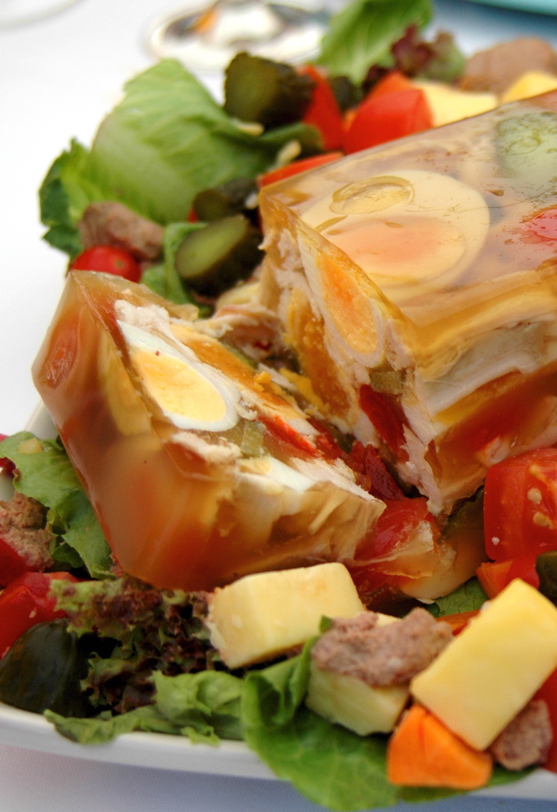

Aspic

Description
Aspic is a slavic dish of jellied meat stock. The gelatin often includes pieces
of vegetables and meat. The shape is given by placing the gelatin in a mold.
Aspic can be used to protect meats, as incasing them in gelatin prevents the
introduction of bacteria. The meat typically used of aspic includes pig feet,
rind, ears, and snout.
Ingredients
- 2 lb pork (snout, ears, trotters), soaked in cold water and refrigerated overnight
- 2 lb of chicken drumsticks
- 2 onions
- 2 large carrots
- 2 sticks of celery
- 2 bay leaves
- 7 peppercorns
- salt to taste
Steps
- In a large pot, boil pork and chicken. Once boiled, remove from heat and drain
- Rinse meat with fresh water and return to pot
- Refill pot with enough water to cover meat plus a half inch
- Cover and bring to a boil
- Reduce heat and simmer for 5 hours
- Add vegetable to pot and simmer for 1 hour
- Discard pork
- Discard it all and dont eat it, its pig feet jelly